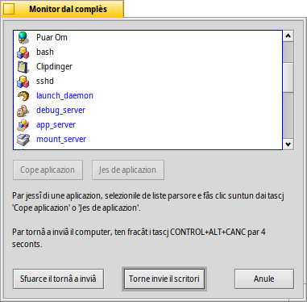

Monitor dai Team
Cun CTRL ALT DEL tu clamis il Monitor dai Team che al liste ducj i programs in esecuzion in chel moment.
I programs che a son stâts inviâts dal sistme a son blu, chei fats partî dal utent in neri.
Lis aplicazions che no rispuindin, che di solit al è un segn che il program al è colassât, a son segnâts in ros. Tu puedis provâ a sierâ un program selezionantlu e fracant (o in alternative CANC opûr Q). Se nol funzione, prove invezit (o in alternative MAIUSC CANC opûr K).
Tu puedis fâ vignî fûr un Terminâl cun OPZ ALT T.
Se il Tracker o il Deskbar a son colassâts o blocâts, al vignarà fûr un gnûf boton (tu varâs prime di copâ il team incriminât): che al tornarà a inviâ il Tracker e/o il Deskbar.